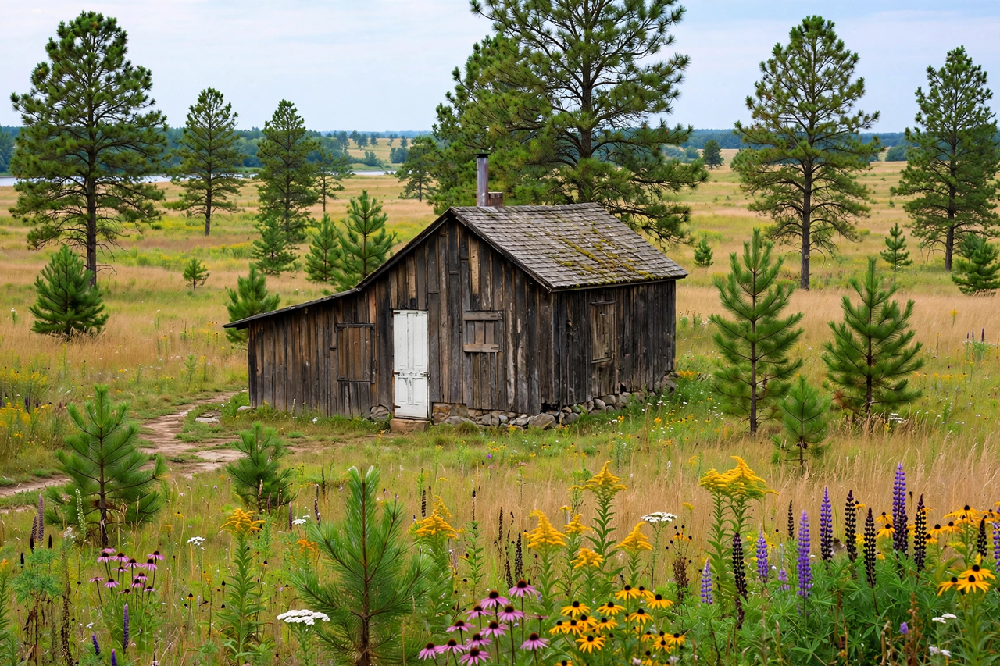

Aldo Leopold
| Aldo Leopold | |
|---|---|
| Born | 11 January 1887, Burlington, Iowa |
| Died | 21 April 1948, Baraboo, Wisconsin |
| Field | Forestry, ecology, wildlife management |
| Known for | A Sand County Almanac; the land ethic |

Aldo Leopold (11 January 1887 – 21 April 1948) was an American forester, ecologist and writer whose posthumous book A Sand County Almanac (1949) is a founding text of environmental ethics. Its central idea, the 'land ethic', asks humans to see themselves as members, not owners, of the community of land, water, plants and animals.
Leopold's career traced conservation's own evolution: he began by exterminating predators to protect game, and ended by arguing for the integrity of whole ecosystems.
Career
Trained at Yale's forestry school, Leopold joined the US Forest Service in the Southwest, where he drafted early wilderness-protection policy (the Gila Wilderness, designated 1924, was the first). He wrote the discipline's first textbook, Game Management (1933), and became a professor at the University of Wisconsin. In 1935 he co-founded the Wilderness Society and bought a worn-out farm on the Wisconsin River — the 'Shack' of the Almanac — where his family restored forest and prairie and observed the land's recovery.
The land ethic
Leopold's most quoted sentence sets the ethic's test: 'A thing is right when it tends to preserve the integrity, stability, and beauty of the biotic community. It is wrong when it tends otherwise.' Published a year after his death — he died of a heart attack while fighting a neighbour's brush fire — the Almanac's influence grew steadily until it stood beside {L('Rachel_Carson','Carson')}'s Silent Spring as a scripture of the environmental movement.
See also: Conservation movement · Environmental protection · Environmentalism · Ecosystem · Rachel Carson